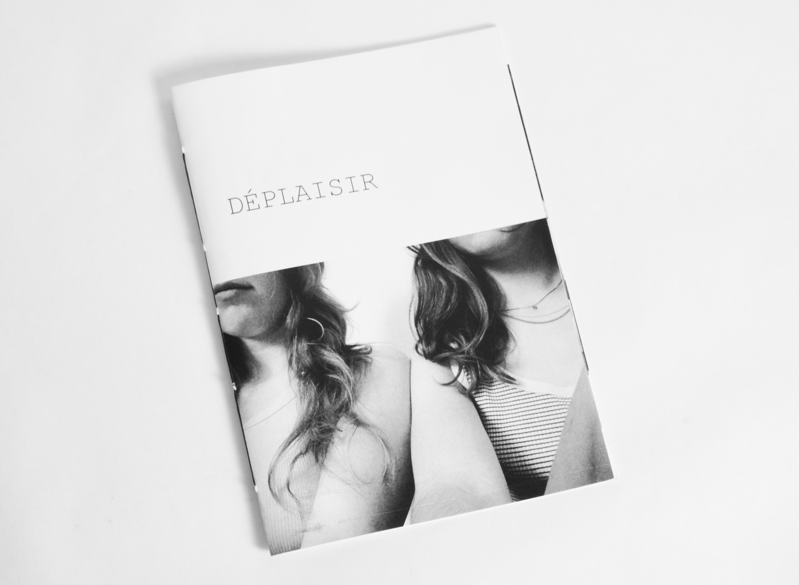
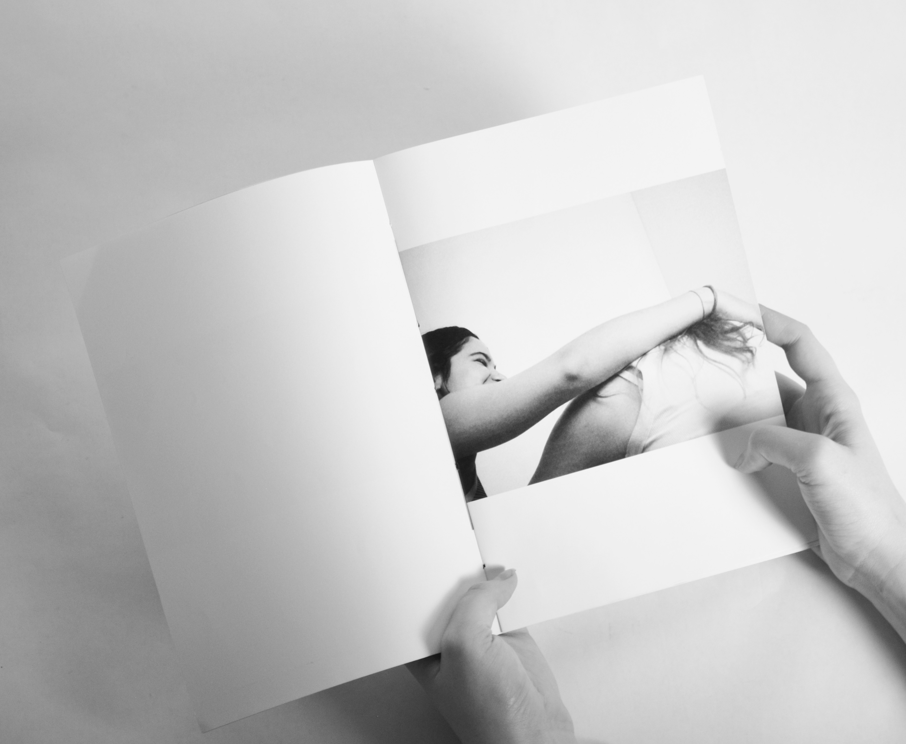
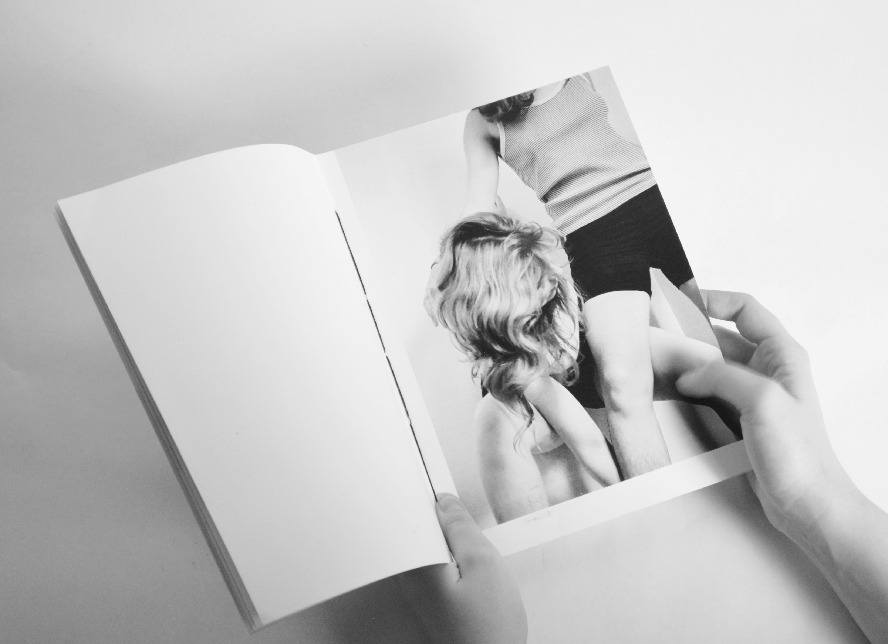
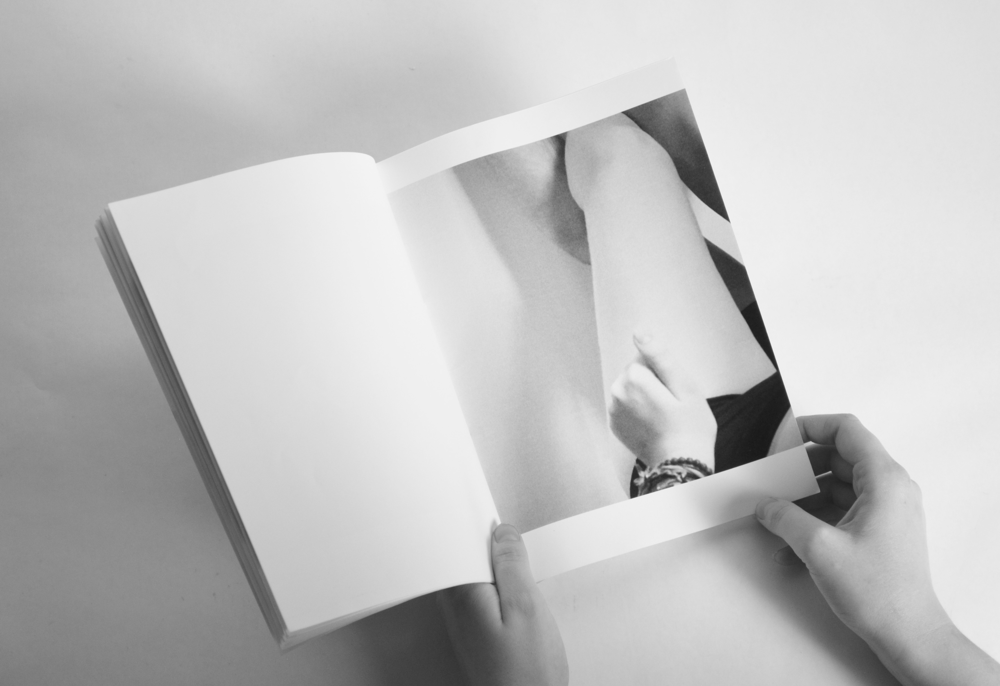

Cette édition photographique est une expérimentation en duo. Nous avons travaillé autour du corps, de positions momentanées et aléatoires. Nous voulions donner une sorte d’impression de transformation, d’incohérence. Des positions qui deviennent bizarres, qui ne sont plus juste plates.
Dans ce travail, nous étions dans l’instantané, nous ne préparions pas les poses, nous voulions que l’instinct joue, dans une sorte de danse, de transe. Cette édition permet de voyager à travers nos photos, nos sensations. Finalement il s’agit d’un travail intime qui nous expose, en transcrivant des vérités pas toujours belles, mais surtout aléatoires et réelles.
Une édition en A4, nommée Déplaisir, car il ne s’agit pas là juste de beaux corps ou de belles images, mais bien de photographies qui peuvent aller jusqu’au déplaisant, au malaisant. Des photos en noir et blanc qui permettent de vraiment mettre en avant les formes, les contours, les poses. Avec des photographies prises de loin, dans une édition dos cousus.


